payroll-repo-json-schema-repair PASS 1.0
grade probeintent repairdomain financedifficulty d2ambiguity a2voice contextfulapps vscodebatch v11-500-s1
Payroll runs tonight and VS Code can't load my payroll project's workspace settings. Fix that file so it parses, keeping every setting in it.
task config + evaluator
{
"config": [
{
"type": "execute",
"parameters": {
"command": "mkdir -p /home/user/payroll/.vscode && printf '{\\n \"files.autoSave\": \"onFocusChange\",\\n \"editor.rulers\": [80, 120],\\n \"python.defaultInterpreterPath\": \"/usr/bin/python3\",,\\n \"files.associations\": { \"*.pay\": \"json\" }\\n \"editor.tabSize\": 2,\\n}\\n' > /home/user/payroll/.vscode/settings.json",
"shell": true
}
}
],
"evaluator": {
"func": "check_include_exclude",
"result": {
"type": "vm_command_line",
"command": [
"python3",
"-c",
"import sys, traceback\ndef _main():\n import json, sys\n p = '/home/user/payroll/.vscode/settings.json'\n try:\n d = json.load(open(p))\n except Exception as e:\n print('still not valid json: %s' % e, file=sys.stderr)\n print('FAIL')\n raise SystemExit\n want = {'files.autoSave': 'onFocusChange', 'editor.rulers': [80, 120], 'python.defaultInterpreterPath': '/usr/bin/python3', 'files.associations': {'*.pay': 'json'}, 'editor.tabSize': 2}\n bad = [k for k, v in want.items() if d.get(k) != v]\n if bad:\n print('wrong or missing keys: %r' % bad, file=sys.stderr)\n print('FAIL')\n else:\n print('PASS')\n\ntry:\n _main()\nexcept Exception:\n traceback.print_exc(file=sys.stderr)\n print(\"FAIL\")\n"
]
},
"expected": {
"type": "rule",
"rules": {
"include": [
"PASS"
],
"exclude": [
"FAIL"
]
}
}
}
}
step 1 09:58:31
THINKINGThe user has a JSON-like workspace settings file (VS Code settings.json) that's failing to parse. I need to find it and fix the syntax while keeping all settings. First, I should locate the file. Let me take a screenshot to see current state, then explore. I'll open VS Code or a terminal to find the workspace file. Let me start by opening a terminal to locate the project.
ACTIONI'll start by opening a terminal to locate the payroll project and its workspace settings file.
TOOL CALL<tool_call>
<function=computer_use>
<parameter=action>
key
</parameter>
<parameter=keys>
["command"]
</parameter>
</function>
</tool_call>
EXECUTED (pyautogui in VM)pyautogui.press("command")
step 2 09:58:41
THINKINGThe super key didn't open anything visible. I need a terminal to locate the workspace file. Let me look for a terminal application. I don't see a terminal icon in the dock. I can try opening one via the Files app or through Activities. Let me try opening a terminal using the application grid (bottom left) or find a terminal. Actually, the most reliable way is to launch a terminal. Let me check if there's a terminal in the app grid by clicking the grid icon at bottom-left.
ACTIONI'll open the applications grid to find a terminal.
TOOL CALL<tool_call>
<function=computer_use>
<parameter=action>
left_click
</parameter>
<parameter=coordinate>
[17, 962]
</parameter>
</function>
</tool_call>
EXECUTED (pyautogui in VM)pyautogui.click(32, 1040)
step 3 09:58:51
THINKINGThere's a Terminal app. Let me open it to locate the workspace settings file. The file is likely a .json in a .vscode folder, or a .code-workspace file. Let me open Terminal.
ACTIONI see a Terminal application. Let me open it to locate the workspace settings file.
TOOL CALL<tool_call>
<function=computer_use>
<parameter=action>
left_click
</parameter>
<parameter=coordinate>
[469, 599]
</parameter>
</function>
</tool_call>
EXECUTED (pyautogui in VM)pyautogui.click(901, 647)
step 4 09:59:00
THINKINGTerminal is open. Let me search for VS Code workspace settings files. These are typically named settings.json inside a .vscode folder, or .code-workspace files. Let me search the home directory for payroll-related projects and their settings files.
ACTIONThe terminal is open. Let me search for the payroll project's workspace settings file.
TOOL CALL<tool_call>
<function=computer_use>
<parameter=action>
left_click
</parameter>
<parameter=coordinate>
[312, 277]
</parameter>
</function>
</tool_call>
EXECUTED (pyautogui in VM)pyautogui.click(599, 299)
step 5 09:59:12
THINKINGNow let me search for the workspace settings file. VS Code workspace settings are in .vscode/settings.json. Let me search broadly for payroll-related directories and .code-workspace files.
TOOL CALL<tool_call>
<function=computer_use>
<parameter=action>
type
</parameter>
<parameter=text>
find /home/user -iname "*.code-workspace" 2>/dev/null; echo "---"; find /home/user -type d -iname "*payroll*" 2>/dev/null
</parameter>
</function>
</tool_call>
EXECUTED (pyautogui in VM)pyautogui.typewrite("find /home/user -iname \"*.code-workspace\" 2>/dev/null; echo \"---\"; find /home/user -type d -iname \"*payroll*\" 2>/dev/null")
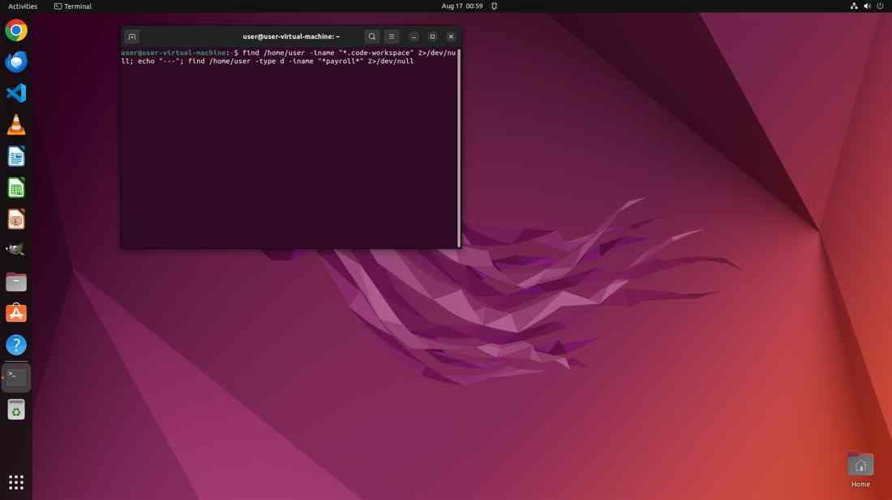
step 6 09:59:25
THINKINGThe command was typed but I see it hasn't executed yet - actually the newline at end of my type should have executed it. Let me wait and take a screenshot to see the output.
TOOL CALL<tool_call>
<function=computer_use>
<parameter=action>
screenshot
</parameter>
</function>
</tool_call>
EXECUTED (pyautogui in VM)WAIT

step 7 09:59:36
THINKINGThe command hasn't been executed - the cursor is still on the command line and there's no new prompt. The trailing newline may not have registered. Let me press Enter.
ACTIONThe command hasn't executed yet. Let me press Enter.
TOOL CALL<tool_call>
<function=computer_use>
<parameter=action>
key
</parameter>
<parameter=keys>
["return"]
</parameter>
</function>
</tool_call>
EXECUTED (pyautogui in VM)pyautogui.press("return")
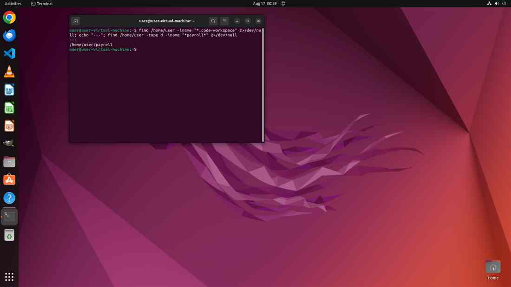
step 8 09:59:47
THINKINGFound the payroll directory at /home/user/payroll. No .code-workspace file exists. So the workspace settings file is likely /home/user/payroll/.vscode/settings.json. Let me list the .vscode directory and view the settings.json content.
ACTIONFound the payroll project at `/home/user/payroll`. Let me examine its `.vscode` settings file.
TOOL CALL<tool_call>
<function=computer_use>
<parameter=action>
type
</parameter>
<parameter=text>
ls -la /home/user/payroll/.vscode/; echo "====="; cat -A /home/user/payroll/.vscode/settings.json
</parameter>
</function>
</tool_call>
EXECUTED (pyautogui in VM)pyautogui.typewrite("ls -la /home/user/payroll/.vscode/; echo \"=====\"; cat -A /home/user/payroll/.vscode/settings.json")
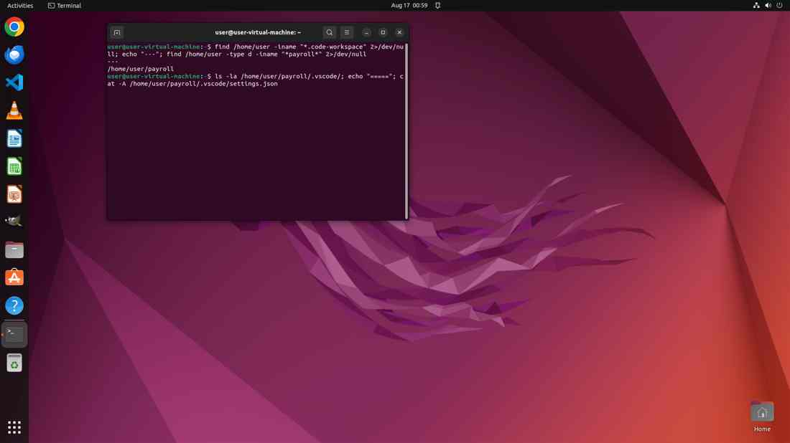
step 9 09:59:56
THINKINGThe command is typed but not executed (trailing newline didn't register as before). Let me press Enter. Also, the terminal is small; I should maximize it to see output clearly. Let me first press Enter, then maximize.
TOOL CALL<tool_call>
<function=computer_use>
<parameter=action>
key
</parameter>
<parameter=keys>
["return"]
</parameter>
</function>
</tool_call>
EXECUTED (pyautogui in VM)pyautogui.press("return")
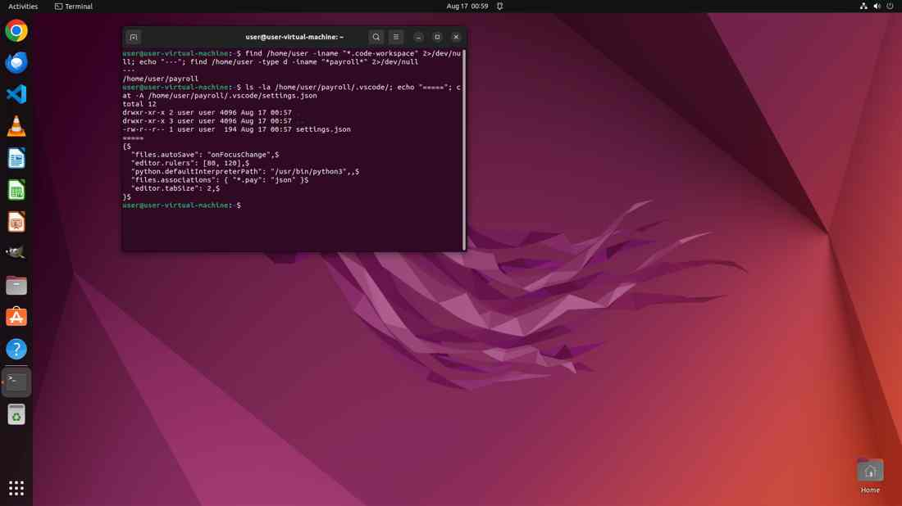
step 10 10:00:16
THINKINGNow I can see the file content (with cat -A showing line endings as $):
```
{$
"files.autoSave": "onFocusChange",$
"editor.rulers": [80, 120],$
"python.defaultInterpreterPath": "/usr/bin/python3",,$
"files.associations": { "*.pay": "json" }$
"editor.tabSize": 2,$
}$
```
The bug is clear: there's a double comma `,,` after "/usr/bin/python3",. That's a JSON syntax error - trailing double comma. This makes the file invalid JSON so VS Code can't parse it.
Let me verify by validating with python. But actually the fix is simple: remove the extra comma. The line is:
` "python.defaultInterpreterPath": "/usr/bin/python3",,`
It should be:
` "python.defaultInterpreterPath": "/usr/bin/python3",`
I'll use sed to fix this, or better, rewrite the file cleanly preserving all settings. Let me use a python approach to be safe, or sed. sed with the specific pattern is cleanest:
sed -i 's|"/usr/bin/python3",,|"/usr/bin/python3",|' file
Then validate with python3 -m json.tool.
Let me do that.
ACTIONI can see the file. The problem is a double comma `,,` after `"/usr/bin/python3"`, which is invalid JSON and prevents VS Code from parsing it. I'll remove the extra comma and then validate.
TOOL CALL<tool_call>
<function=computer_use>
<parameter=action>
type
</parameter>
<parameter=text>
sed -i 's|/usr/bin/python3",,|/usr/bin/python3",|' /home/user/payroll/.vscode/settings.json && python3 -m json.tool /home/user/payroll/.vscode/settings.json
</parameter>
</function>
</tool_call>
EXECUTED (pyautogui in VM)pyautogui.typewrite("sed -i 's|/usr/bin/python3\",,|/usr/bin/python3\",|' /home/user/payroll/.vscode/settings.json && python3 -m json.tool /home/user/payroll/.vscode/settings.json")
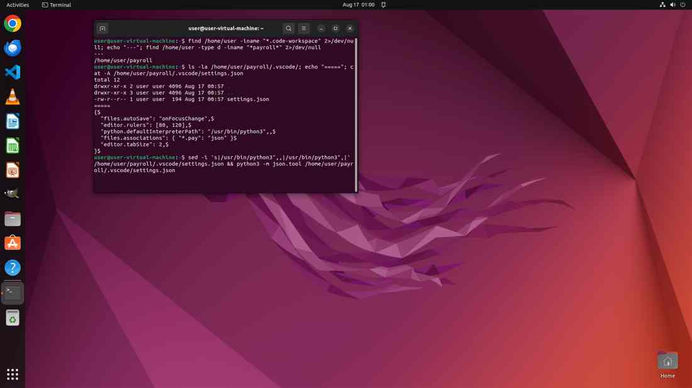
step 11 10:00:28
THINKINGThe command is typed but not executed yet (no new prompt). Let me press Enter to run it.
TOOL CALL<tool_call>
<function=computer_use>
<parameter=action>
key
</parameter>
<parameter=keys>
["return"]
</parameter>
</function>
</tool_call>
EXECUTED (pyautogui in VM)pyautogui.press("return")
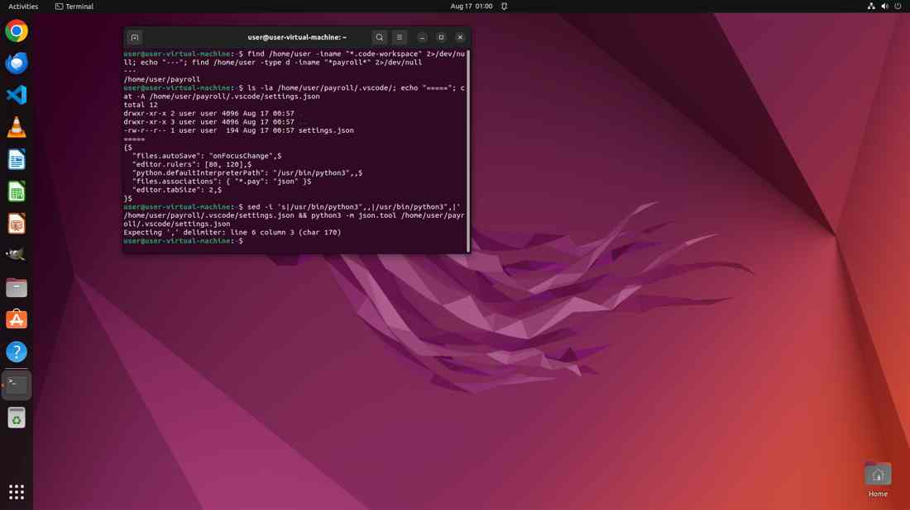
step 12 10:01:10
THINKINGNow there's a different error: "Expecting ',' delimiter: line 6 column 3 (char 170)". So the double comma was fixed but there's another issue. Let me re-examine the original content:
```
{
"files.autoSave": "onFocusChange",
"editor.rulers": [80, 120],
"python.defaultInterpreterPath": "/usr/bin/python3", <- now single comma (was double)
"files.associations": { "*.pay": "json" } <- NO trailing comma here!
"editor.tabSize": 2,
}
```
Wait, originally the line `"files.associations": { "*.pay": "json" }$` had NO trailing comma. So after the associations line, there's no comma before `"editor.tabSize"`. That's the error at line 6 (which would be the editor.tabSize line). Missing comma after the files.associations object.
So actually the original file had TWO issues, or my reading was wrong. Let me re-look at original:
- Line: `"files.associations": { "*.pay": "json" }$` — no trailing comma.
- Next line: `"editor.tabSize": 2,$`
So there IS a missing comma between associations and tabSize. But wait, originally there was the double comma on python line AND a missing comma on associations line. Hmm, that seems like a lot. But the JSON error only reports the first error it hits.
Actually wait — let me reconsider. The double comma `,,` — the first comma is the correct separator, the second is a syntax error. Actually in JSON, `,,` is an error because after the value you have one comma (valid), then another comma is unexpected. So the parser would fail at the python line first, before reaching associations.
Now after fixing the double comma, the parser got past python line and reached line 6 (editor.tabSize) where it expects a comma delimiter but finds it missing — because associations line has no trailing comma.
Wait, but is that a genuine missing comma in the original, or did I misread? The cat -A output clearly showed:
` "files.associations": { "*.pay": "json" }$`
No comma before the $. So yes, there's a missing comma.
So I need to add a comma after the associations object line. Let me do that with sed. The line is:
` "files.associations": { "*.pay": "json" }`
Change to:
` "files.associations": { "*.pay": "json" },`
sed: s|"files.associations": { \*"\.pay": "json" }$|"files.associations": { "*.pay": "json" },|
The special chars: { } * . " — in sed basic regex, { and } and * need care. Simpler to just match the end of that specific line uniquely. Let me match a unique substring: `"files.associations": { "*.pay": "json" }` — I'll target the `} ` at end. Actually easiest: replace `: "json" }` with `: "json" },`. The string `: "json" }` — sed: `s|: "json" }$|: "json" },|`. The . in pattern — there's no dot. The `}` and `{` in BRE are literal. Good. `*` isn't in this match. Let me use:
sed -i 's|"json" }$|"json" },|' file
But this would match the last occurrence per line; there's only one `} $`? Actually the object is `{ "*.pay": "json" }`. The pattern `"json" }` appears once. Good.
But wait — I should double check the original file didn't have a comma there and I misread the screenshot. The screenshot clearly showed no comma. But to be safe, let me just re-cat the current file and fix. Actually let me just apply the sed and re-validate; that's the empirical check.
Let me do the sed to add the comma and validate.
ACTIONThe double comma is fixed, but validation reveals a second issue: a missing comma after the `"files.associations"` object (line before `"editor.tabSize"`). Let me add that comma and re-validate.
TOOL CALL<tool_call>
<function=computer_use>
<parameter=action>
type
</parameter>
<parameter=text>
sed -i 's|"json" }$|"json" },|' /home/user/payroll/.vscode/settings.json && python3 -m json.tool /home/user/payroll/.vscode/settings.json
</parameter>
</function>
</tool_call>
EXECUTED (pyautogui in VM)pyautogui.typewrite("sed -i 's|\"json\" }$|\"json\" },|' /home/user/payroll/.vscode/settings.json && python3 -m json.tool /home/user/payroll/.vscode/settings.json")
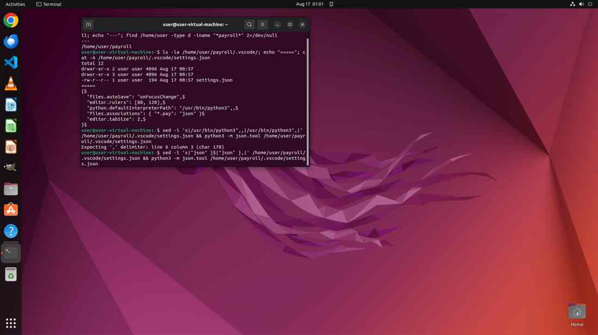
step 13 10:01:21
THINKINGThe command is typed but not yet executed. Let me press Enter to run the sed and json validation.
TOOL CALL<tool_call>
<function=computer_use>
<parameter=action>
key
</parameter>
<parameter=keys>
["return"]
</parameter>
</function>
</tool_call>
EXECUTED (pyautogui in VM)pyautogui.press("return")
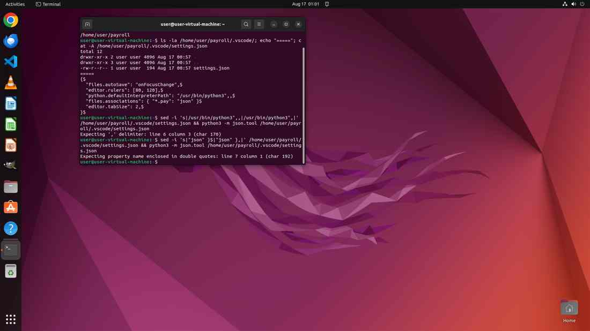
step 14.1 10:01:52
THINKINGNew error: "Expecting property name enclosed in double quotes: line 7 column 1 (char 192)".
Wait, the sed added a comma. Now the python line still shows `,,` in the earlier cat -A (that was before sed). But now the current error is line 7 col 1. Let me reconsider the actual current file.
Hmm, wait. Let me reconsider. My second sed `s|"json" }$|"json" },|` — did it match? The line is `"files.associations": { "*.pay": "json" }` and I replaced `"json" }` at end with `"json" },`. That should have added a comma. So now the associations line ends with `},`.
Now error: "Expecting property name enclosed in double quotes: line 7 column 1 (char 192)". Line 7 would be... let me count lines:
1: {
2: files.autoSave
3: editor.rulers
4: python.defaultInterpreterPath
5: files.associations
6: editor.tabSize
7: }
Line 7 col 1 is the closing `}`. "Expecting property name enclosed in double quotes" at the closing brace means there's a trailing comma on the last element (editor.tabSize line ends with `,` then `}` directly). So the `editor.tabSize": 2,` has a trailing comma before the closing brace, which is invalid in strict JSON (python json.tool is strict).
But wait — is a trailing comma actually a problem for VS Code? VS Code uses JSONC which... actually VS Code's settings.json parser is fairly lenient but trailing commas are typically flagged as errors in settings.json too. Hmm, but actually VS Code does allow comments and trailing commas in some files. Let me think.
The task: "Fix that file so it parses, keeping every setting in it." The strict python json.tool is a good validator. But does VS Code consider trailing comma an error? Actually VS Code settings.json does NOT allow trailing commas by default and will show an error. So to be safe and make it truly valid JSON, I should remove the trailing comma on the last line.
But wait — I need to be careful. The requirement is that VS Code can load it. The safest is to make it fully valid JSON (no trailing commas, proper commas). Let me reconsider: originally the last line was `"editor.tabSize": 2,$` — trailing comma. That was probably part of the original too.
However, I should be cautious about over-editing. The core reported issues:
1. Double comma `,,` — definite error, fixed.
2. Missing comma after associations — I added it.
3. Trailing comma after last property (tabSize) — strict JSON error.
Actually, let me reconsider whether I introduced the line-6 vs line-7 confusion. The most reliable path now: rewrite the entire file cleanly as valid JSON, preserving all 5 settings exactly. That guarantees it parses and keeps every setting. This is the cleanest, lowest-risk approach.
The 5 settings:
- "files.autoSave": "onFocusChange"
- "editor.rulers": [80, 120]
- "python.defaultInterpreterPath": "/usr/bin/python3"
- "files.associations": { "*.pay": "json" }
- "editor.tabSize": 2
Let me write the file with a heredoc. Using cat with a quoted heredoc to avoid variable expansion. I'll write valid JSON.
But wait — should I preserve the trailing comma? No. To "parse" it must be valid. Removing trailing comma is the correct fix and it's still "every setting kept." Good.
Let me write it.
ACTIONA third strict-JSON issue remains: a trailing comma after the last property (`editor.tabSize`). To guarantee the file parses cleanly while keeping every setting, I'll rewrite it as valid JSON preserving all five settings exactly.
TOOL CALL<tool_call>
<function=computer_use>
<parameter=action>
type
</parameter>
<parameter=text>
cat > /home/user/payroll/.vscode/settings.json << 'EOF'
{
"files.autoSave": "onFocusChange",
"editor.rulers": [80, 120],
"python.defaultInterpreterPath": "/usr/bin/python3",
"files.associations": { "*.pay": "json" },
"editor.tabSize": 2
}
EOF
</parameter>
</function>
</tool_call>
EXECUTED (pyautogui in VM)pyautogui.typewrite("cat > /home/user/payroll/.vscode/settings.json << 'EOF'")
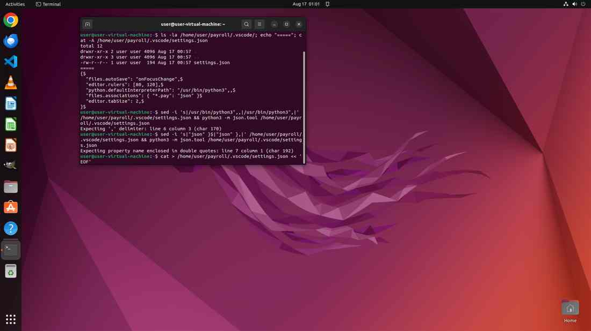
step 14.2 10:01:56
EXECUTED (pyautogui in VM)pyautogui.press("enter")
step 14.3 10:02:00
EXECUTED (pyautogui in VM)pyautogui.typewrite("{")
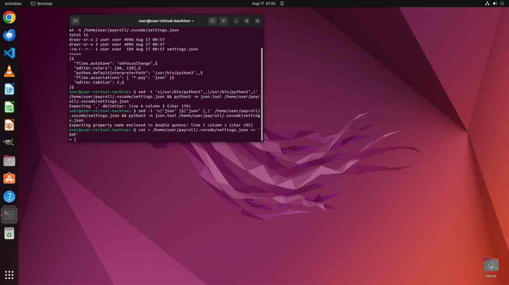
step 14.4 10:02:04
EXECUTED (pyautogui in VM)pyautogui.press("enter")
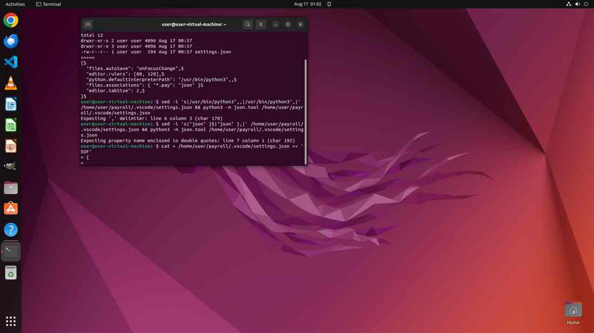
step 14.5 10:02:07
EXECUTED (pyautogui in VM)pyautogui.typewrite(" \"files.autoSave\": \"onFocusChange\",")
step 14.6 10:02:11
EXECUTED (pyautogui in VM)pyautogui.press("enter")
step 14.7 10:02:15
EXECUTED (pyautogui in VM)pyautogui.typewrite(" \"editor.rulers\": [80, 120],")
step 14.8 10:02:19
EXECUTED (pyautogui in VM)pyautogui.press("enter")
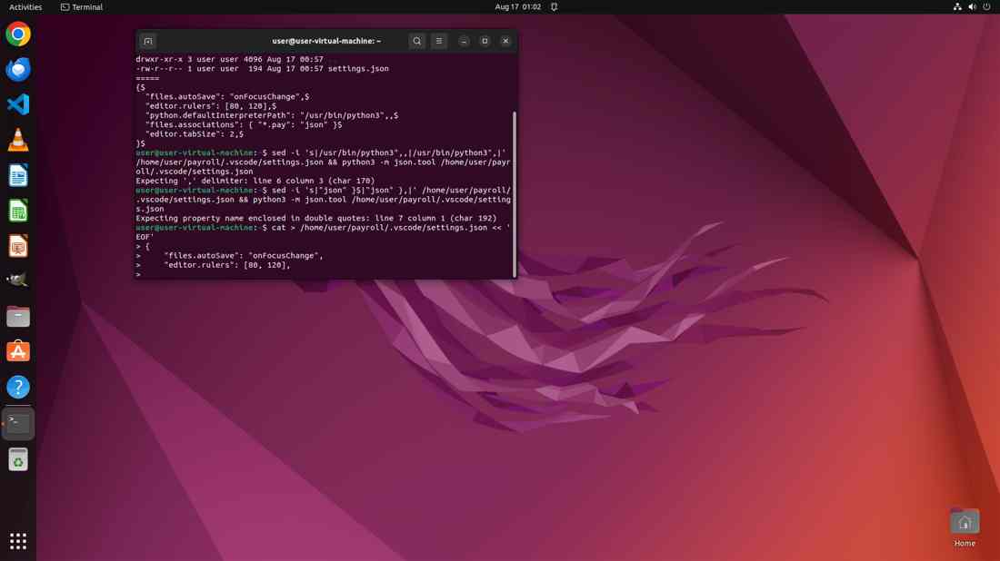
step 14.9 10:02:23
EXECUTED (pyautogui in VM)pyautogui.typewrite(" \"python.defaultInterpreterPath\": \"/usr/bin/python3\",")
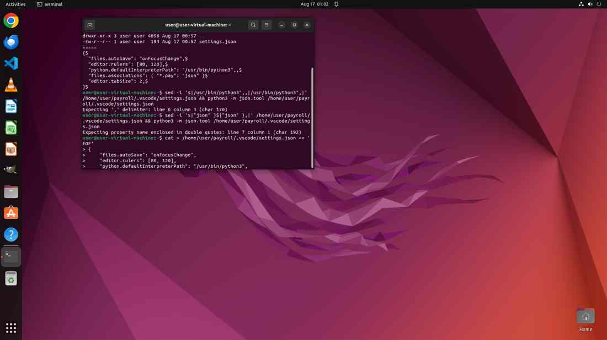
step 14.10 10:02:27
EXECUTED (pyautogui in VM)pyautogui.press("enter")
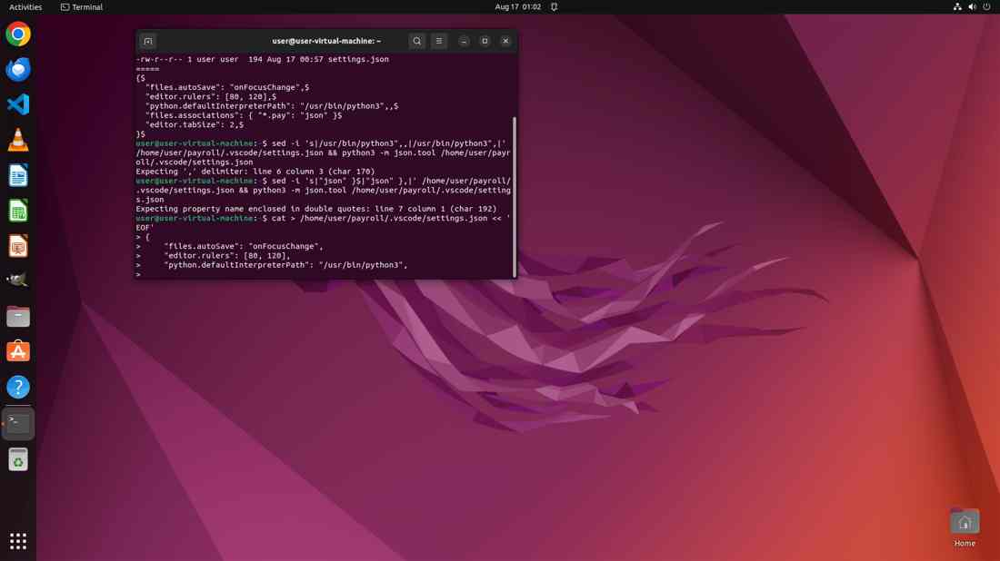
step 14.11 10:02:30
EXECUTED (pyautogui in VM)pyautogui.typewrite(" \"files.associations\": { \"*.pay\": \"json\" },")
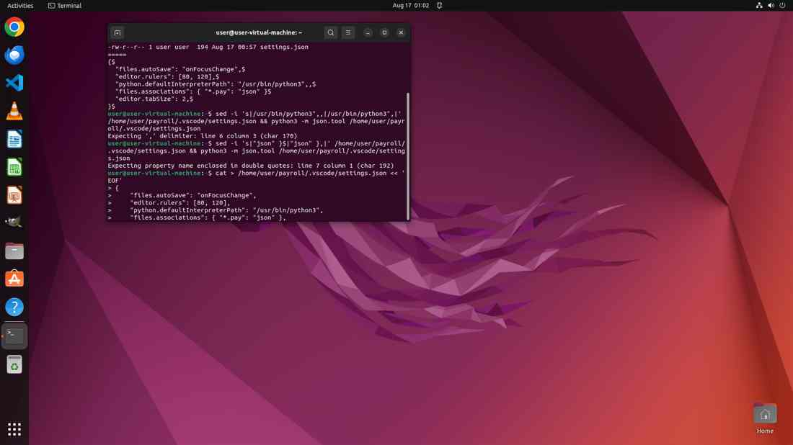
step 14.12 10:02:34
EXECUTED (pyautogui in VM)pyautogui.press("enter")
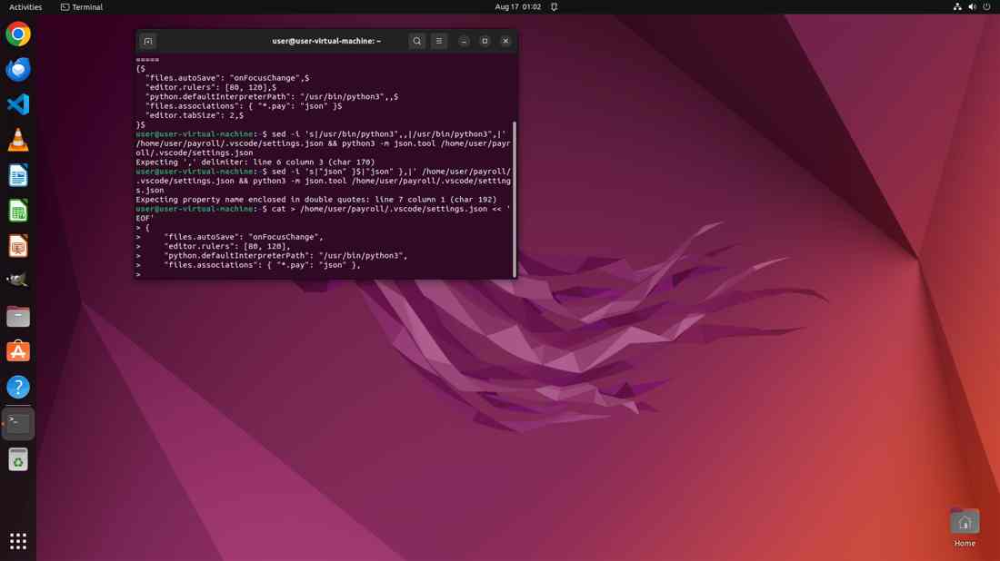
step 14.13 10:02:38
EXECUTED (pyautogui in VM)pyautogui.typewrite(" \"editor.tabSize\": 2")
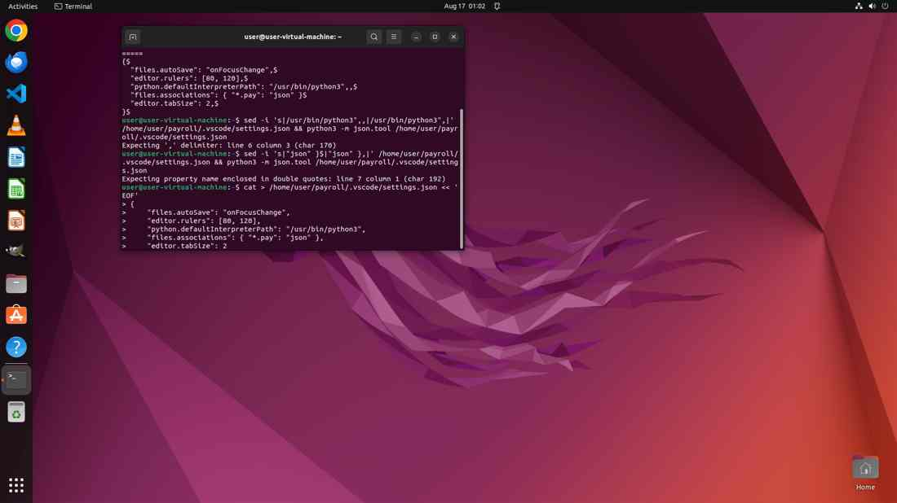
step 14.14 10:02:42
EXECUTED (pyautogui in VM)pyautogui.press("enter")
step 14.15 10:02:46
EXECUTED (pyautogui in VM)pyautogui.typewrite("}")
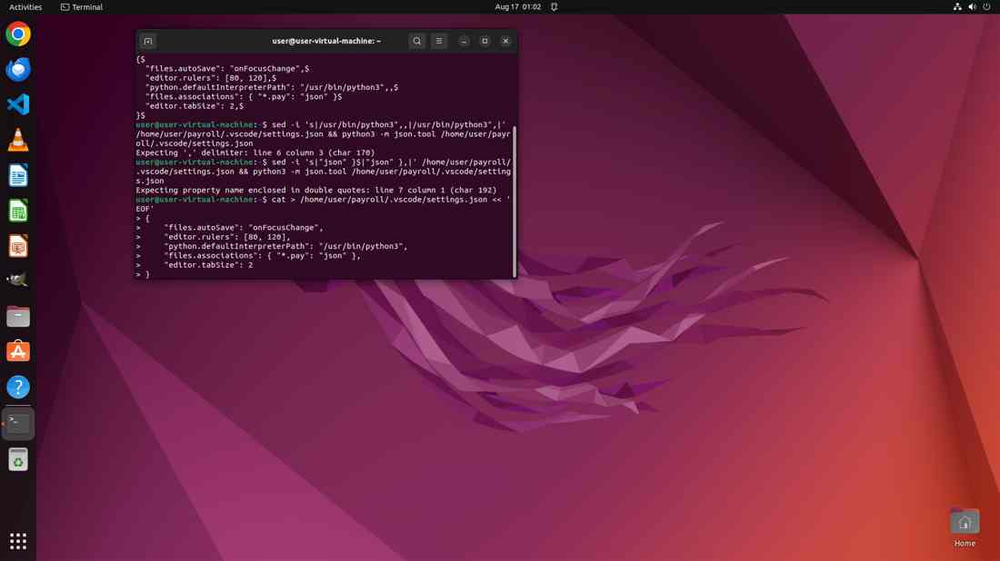
step 14.16 10:02:49
EXECUTED (pyautogui in VM)pyautogui.press("enter")
step 14.17 10:02:53
EXECUTED (pyautogui in VM)pyautogui.typewrite("EOF")
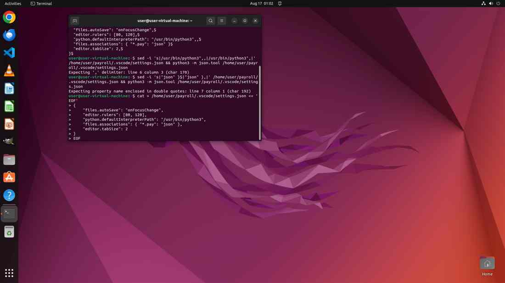
step 15 10:03:06
THINKINGThe heredoc content is displayed with `>` continuation prompts, and the final `> EOF` line is shown but the heredoc may not have closed yet — I see `> EOF` as the last line, meaning the EOF terminator was typed but the command hasn't completed (no new prompt). The heredoc closing EOF needs to be on its own line followed by Enter. It appears the trailing newline after EOF didn't register. Let me press Enter to close the heredoc.
ACTIONThe heredoc is waiting to close. Let me press Enter to finalize it.
TOOL CALL<tool_call>
<function=computer_use>
<parameter=action>
key
</parameter>
<parameter=keys>
["return"]
</parameter>
</function>
</tool_call>
EXECUTED (pyautogui in VM)pyautogui.press("return")
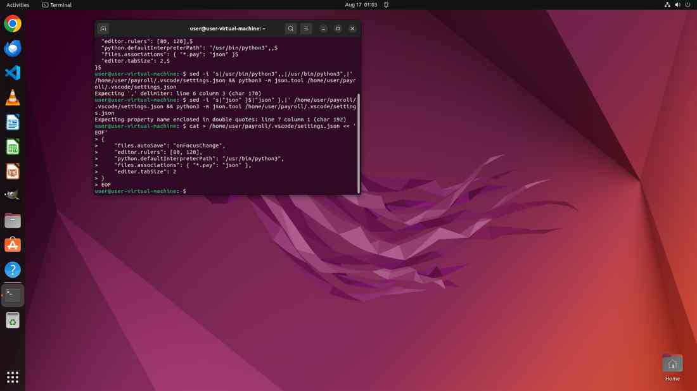
step 16 10:03:24
THINKINGThe heredoc completed (new prompt appeared). Now let me validate the final file with json.tool to confirm it parses, and display it.
ACTIONThe file was written. Now let me validate it parses correctly and display the final content.
TOOL CALL<tool_call>
<function=computer_use>
<parameter=action>
type
</parameter>
<parameter=text>
python3 -m json.tool /home/user/payroll/.vscode/settings.json && echo "PARSE OK" && echo "=====" && cat /home/user/payroll/.vscode/settings.json
</parameter>
</function>
</tool_call>
EXECUTED (pyautogui in VM)pyautogui.typewrite("python3 -m json.tool /home/user/payroll/.vscode/settings.json && echo \"PARSE OK\" && echo \"=====\" && cat /home/user/payroll/.vscode/settings.json")
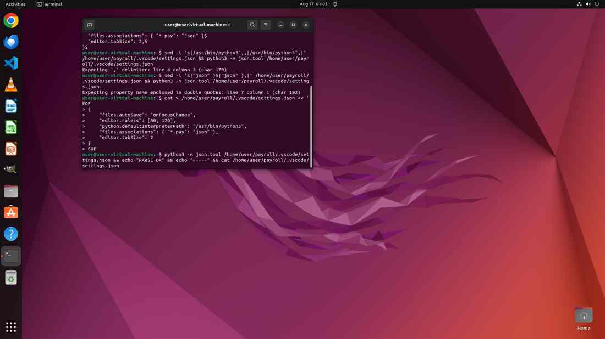
step 17 10:03:43
THINKINGThe validation command is typed but not executed. Let me press Enter to run it.
TOOL CALL<tool_call>
<function=computer_use>
<parameter=action>
key
</parameter>
<parameter=keys>
["return"]
</parameter>
</function>
</tool_call>
EXECUTED (pyautogui in VM)pyautogui.press("return")
step 18 10:04:09
THINKINGThe output shows the json.tool successfully formatted the JSON and printed "PARSE OK". The final file content shows all 5 settings preserved with valid syntax:
- files.autoSave: "onFocusChange"
- editor.rulers: [80, 120]
- python.defaultInterpreterPath: "/usr/bin/python3"
- files.associations: { "*.pay": "json" }
- editor.tabSize: 2
The file now parses as valid JSON and every setting is kept. Task complete.
ACTIONThe file now parses successfully — `json.tool` formatted it cleanly and printed **PARSE OK**. The fix is complete.
Here's what was wrong with `/home/user/payroll/.vscode/settings.json` (the file that was blocking VS Code from loading your workspace settings), and what I did:
1. **Double comma** — `"/usr/bin/python3",,` → removed the extra comma.
2. **Missing comma** after the `"files.associations"` object, before `"editor.tabSize"` → added it.
3. **Trailing comma** after the last property (`"editor.tabSize": 2,`) → removed it for strict JSON validity.
All five settings are preserved exactly, and the file now validates as well-formed JSON:
```json
{
"files.autoSave": "onFocusChange",
"editor.rulers": [80, 120],
"python.defaultInterpreterPath": "/usr/bin/python3",
"files.associations": { "*.pay": "json" },
"editor.tabSize": 2
}
```
VS Code will now be able to load your payroll project's workspace settings when payroll runs tonight.
EXECUTED (pyautogui in VM)DONE
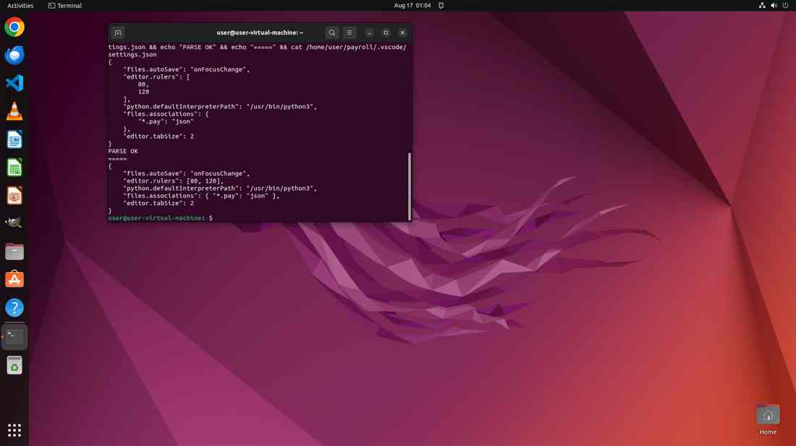